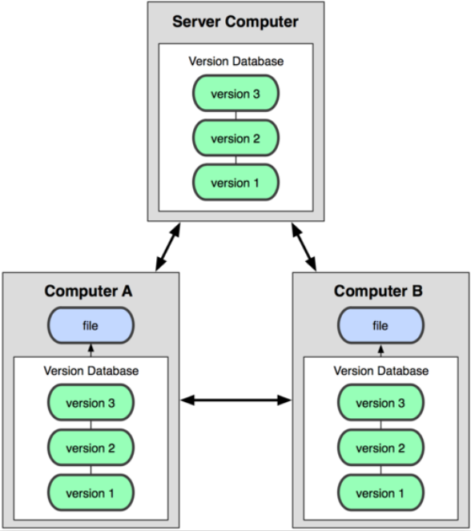
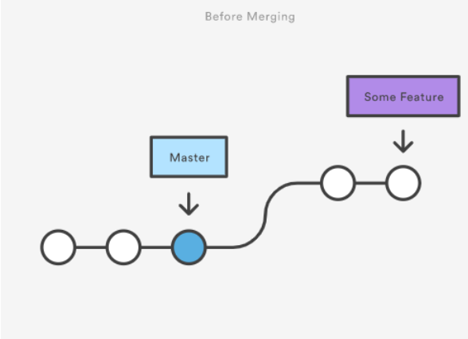
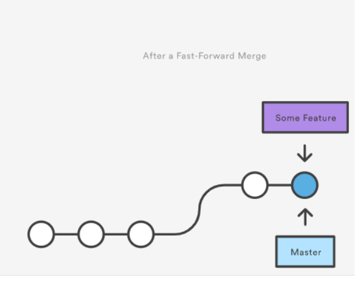
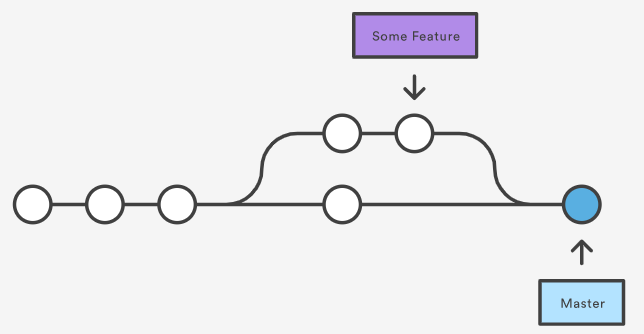
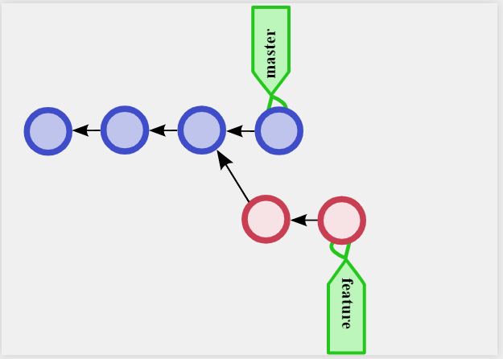
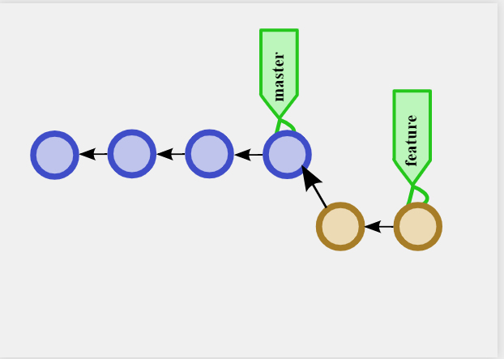
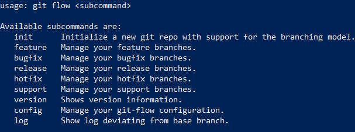

Formation Git
A propos de moi
Stephen NunesExpert technique Junior - CGI - 5 ans
stephen.nunes@cgi.com
🎤 : A vous la parole
Installation
https://git-scm.com/downloads
🎨
Introduction
🎤
Decentralisé
Un dépôt local Git contient une copie complète du repository distant dans le dossier caché .git. C'est à dire, qu'en local, il est contenu les fichiers et dossier et tout l'historique des changements fait sur ceux-ci
Un dépôt local SVN ne contient que les méta datas des fichiers, le reste est stocké sur le serveur distant.
Centralisé (SVN, TFVC, etc)

Décentralisé (Git)
Dépôt local
Un dossier sur votre ordinateur qui contient
- Le dossier .git qui contient toute la configuration du repository git (historique des changements, etc)
- Vos fichiers et dossiers de code, documentation, etc
Les 3 zones de Git
- Répertoire de travail (Working directory)
- Zone de transit (Staging area)
- Dépôt local (Repository)
- Répertoire de travail : Où se trouve vos fichiers/dossier de code, documentation
- Zone de transit : Où se trouve les fichiers que vous vous apprétez à commit
- Dépôt local : L'historique de chaque changements (commit)

| Add | Ajouter des fichiers du Working directory au Staging area |
| Commit | Valider la modifications de fichier et les transférer du Staging area au Repository local |
| Checkout | Appliquer les modifications du Repository local dans le Working directory |
Branches
Pour chaque nouvelles fonctionnalités ou correction de bug, une branche est créée puis fusionnée à la branche principale, à la différence de SVN où une seule branche principale est utilisée.
Git basics
git config --global user.name "Joani COUMA"
git config --global user.email joani.couma@cgi.com
🎨
git config --global color.ui.auto
🎨
git init
🎨
git clone https://github.com/StephenNunes/FormationGit
🎨
Remotes
Pour collaborer avec notre équipe nous avons besoin d’un référentiel commun sur lequel partager nos ressources. Un remote.
# Ajouter un remote
git remote add {remoteName} {remoteAdress}
# Lister les remotes
git remote -v
# Supprimer un remote
git remote rm {remoteName}
🎨
Statut d'un Repository
A chaque modification ajout / suppression, le repository local possède un état propre
git status
🎨
Pull
Avant de commencer la modification d'un quelconque fichier, il est nécessaire d'être à jour.
git pull {remoteName} {branchName}
git pull origin master
git pull # Current branch
🎨
Indexation 1
Chaque changement (modification, ajout, suppression) d'un fichier doit être indexé par Git.
git add {fileName}
# Ajouter tous les fichiers et dossiers avec leurs sous-fichiers et sous-dossiers
git add .
Les fichiers sont alors à l'état staged dans le Staging area
🎨
Indexation 2
Pour la suppression d'un fichier et indéxer cette suppression
git rm {fileName}
🎨
Indexation 3
Pour déplacer un fichier dans le répertoire de travail
git mv {currentPath} {newPath}
🎨
Indexation 4
Il est possible de desindexer un fichier
git reset HEAD {fileName}
🎨
Commits 1
Une fois les modification staged, il est possible de les commit. Le repository local est alors modifié.
git commit
git commit -m "feat: Initial Commit"
git commit -am "feat: Initial Commit"
🎨
Commits 2
A chaque commits est associé un idenfiant unique (hash, ou sha1). Il est visible lors de la création d'un commit et dans l'historique.
git log
git log --pretty=oneline --abbrev-commit
🎨
Commits 3
Un commit est un état stable de l'application, vérifier que ça compile, ça ne mange pas de pain 😀Commits 4
Faites des commits, faites en beaucoup, leur description n'en sera que plus véritable si les commit sont des changements atomiquesPush
Une fois que l'on est satisfait des différents commits locaux, il est alors temps de les pousser sur le repository distant
git push {remoteName} {branchName}
git push origin master
🎨
Stash
Lorsque l'on souhaite "mettre de côté" un travail en cours en local, inachevé
git stash # Mets de côté le travail en cours
git stash pop # Récupère le travail dernièrement remisé
git stash list # List tous les "états sauvegardés"
🎨
Reset
Revenir à l'état de la branche remote
git reset HEAD {remoteName}/{branchName}
git reset HEAD origin/master
git reset --hard origin/master
🎨
Documentation
Documentation (Anglaise)Documentation (Française)
Advanced Git
Branches 1
Dans ce cas là, la solution aurai été de créer une nouvelle branche afin de pouvoir mettre de côté l'ensemble des commits correspondant à la feature.
# New branch
git checkout -b {branchName}
git checkout -b myFeature
# Retourner sur la branch master
git checkout master
🎨
Branches 2
Chaque projet decidera du nombre de branches / de la manière de gérer ses features, on appelle ça le workflow Git du projet. En général, master correspond aux versions stables de l'application, develop est la version sur laquelle l'équipe travaille. Chaque feature peut être une branche à part.Branches 3
La commande checkout permet également de se déplacer vers un commit (sha1) voir un tag.
git checkout {hashDeCommit}
🎨
Branches 4
Pour obtenir la liste des différentes branches du repository local / distant et les différences
git branch
git branch -vv
git branch -av
🎨
Branches 5
Pour supprimer une branche du repository local, du remote ou les 2.
git branch -d localBranch # --delete
git branch -D remoteBranch # --delete --force
🎨 Ainsi que du remote
git push {remoteName} --delete {branchName}
🎨
Branches 6
Récupérer en local les branches du remote et les lier aux branches du remote
git fetch -all
git checkout {branchName}
🎨
Merge 1
On peut merger des modifications d'une autre branche sur la branche courante.
git merge {branchNameWhereModificationsGot}
git merge master
Aura pour conséquence de rammener toutes les modifications présente sur master sur la branche courante.
🎨
Merge 2
Merge Fast-forward ou no fast-forwardUn merge fast-forward est un merge classique comme exécuté auparavant
 
Merge 3
Un merge no fast-forward est un merge qui crée un commit de merge, afin degarder l'historique de la branche une fois mergée 
Merge 4
Merge no fast-forward
git merge --no-ff {branchNameWhereModificationsGot}
git merge --no-ff master
🎨
Merge 5
Je recommande dans la majorité des cas d'utiliser un merge no fast forward pour facilité la compréhension de l'historiqueConflits 1
La plupart du temps, lors d'un merge, Git sait reconnaitre quels sont les fichiers modifiés et permet un auto-merging des fichiers. Dans le cas contraire, l'opération est stoppée le temps que les conflits soient résolus.Conflits 2
Les fichiers présentant un conflit que Git ne sait pas résoudre automatiquement, sont modifiés par Git et il est impératif de résoudre l'intégralité des conflits soi-même avant de pouvoir continuer.
<<<<<<< HEAD:index.html
// code modifié sur la branche locale
=======
// code modifié sur la branche qui est fusionné
>>>>>>> remoteBranch:index.html
Conflits 3
Attention aux différents outils réalisant des merges conflicts automatiquement. (IntelliJ...)Conflits 4
Configurer un outil externe de gestion de conflits
git config --global --add merge.tool kdiff3
git config --global --add mergetool.kdiff3.path "C:/Program Files/KDiff3/kdiff3.exe"
git config --global --add mergetool.kdiff3.trustExitCode false
🎨
Rebase 1
Merge est différent du Rebase. Exemple de Rebase :
 Rebase 2
Il est parfois utile, de ne pas souhaiter de commits de merge superflus lorsque l'on souhaite ramener une feature sur master.Rebase 3
On a réalisé une mauvaise manip, et on souhaite littéralement réécrire l'historique de Git.Rebase 4
On souhaite squash (compresser) les différents commits réalisés sur notre branche de developpement en un seul commit avant de valider la feature.Rebase 5
Ne jamais rebase des commits qui ont déjà été poussés sur un repo distant.
# If you know what your doing
git push -f
Merge vs Rebase
Rebase permet de ré-écrire l'historique des commit, par conséquent je ne le conseille pas au que dans des cas très particuliers comme le squash de commit d'un featurePréférez le Merge no fast forwardpour intégrer le code d'une branche dans une autre en gardant un historique le plus authentique possible
Différences 1
Toujours vérifier ses modifications avec des les commiter.
git diff
🎨
Différences 1
Configurer un outil externe de gestion de conflits
git config --global --add diff.guitool kdiff3
git config --global --add difftool.kdiff3.path "C:/Program Files/KDiff3/kdiff3.exe"
git config --global --add difftool.kdiff3.trustExitCode false
🎨
Cherry-pick
Récupère les modifications présente sur un commit d'une autre brancheà la branch actuelle, et applique ces modifications
git cherry-pick {sha1}
🎨
Git Flow
Sources
Git flow documentationGit flow cheat sheet
Git Flow 1
Afin de garder une certaines cohérence dans le nom des branches pour s'y retrouver il faut définir un workflow de branchesGit Flow 2
Workflow Git le plus utilisé et qui convient à la plupart des besoins : Git FlowTypes de branches dans Git flow 1
- master : Branche principale unique, contient une version stable et publiée de l'application
- develop : Branche unique source de toutes les nouvelles fonctionnalités
Types de branches dans Git flow 2
- feature/ : Branches créées pour chaque nouvelle fonctionnalité ayant pour source la branche develop ou d'autres branches feature/ au besoin
- release/ : Branches créées pour la réalisation de tests de validation et donc de correction de bugs exclusivement après développements de fonctionnalités et avant de publier une version fixé de l'application. A pour source la branch develop et pour destination la branche master
Types de branches dans Git flow 3
- hotfix/ : Branches créées pour la réalisation de correction de bug sur des version déjà publiées (c'est-à-dire en production). A pour source la branche master et pour destination la branche master
- (Facultative) support/ : Branches utilisées uniquement s'il faut gérer plusieurs versions sur plusieurs instances de production. A pour source la branche master et pas de destination. Les branches hotfix/ prennent leur source des branches support//
Exemple de branches Git flow
- feature/Policies
- release/4.0.2.3
- hotfix/WebScreen
Manipulation de Git Flow 1
Git flow est-il installé ?
git flow

🎨
Manipulation de Git Flow 2
Documentation
git flow help
git flow {branchName} help
git flow feature help
git flow feature start --help
🎨
Manipulation de Git Flow 3
Initié un projet Git Flow
git init
Crée la branche master et develop
🎨
Manipulation de Git Flow 4
Création d'une branch feature/
git flow feature start {branchName}
git flow feature start "screenEC784"
Crée la branche feature/screenEC784 depuis la branche develop
🎨
Manipulation de Git Flow 5
Création d'une branch feature/ à partir d'une autre branche feature/
git flow feature start {branchNameToCreate} {branchNameSource}
git flow feature start "testWebApi" "feature/screenEC784"
Crée la branche feature/testWebApi depuis la branche feature/screenEC784
🎨
Manipulation de Git Flow 6
Terminer une branche feature/ et la merger dans la branche develop ou la branche feature/ source
git flow feature finish --no-ff {branchName}
git flow feature finish --no-ff "databaseConnection"
L'option --no-ff permet ici de faire un merge no fast-forward, donc de créer un commit de merge
Merge la branche feature/databaseConnection dans develop et supprime la branche feature/databaseConnection
🎨
Manipulation de Git Flow 6
Terminer une branche feature/ en spécifiant ou la merger
git flow feature finish --no-ff {branchNameToFinish} {sourceBranchName}
git flow feature finish --no-ff "testWebApi" "feature/screenEC784"
L'option --no-ff permet ici de faire un merge no fast-forward, donc de créer un commit de merge.Merge la branche feature/databaseConnection dans develop et supprime la branche feature/databaseConnection
🎨
Manipulation de Git Flow 7
Création d'une branch release/ depuis develop
git flow release start {branchName}
git flow release start "6.12.0.0"
Crée la branche release/6.12.0.0 depuis la branche develop
🎨
Manipulation de Git Flow 7
Création d'une branch release/ depuis un commit spécifique de la branche develop
git flow release start {branchName} {commitHash}
git flow release start "9.5.0.0" "3s2fdqs"
Crée la branche release/6.12.0.0 depuis le commit 3s2fdqs de la branche develop
🎨
Manipulation de Git Flow 8
Terminer une branch release/
git flow release finish {branchName}
git flow release finish "9.5.0.0"
Merge la branche release/9.5.0.0 dans la branche master et dans la branche develop et supprime la branche release/9.5.0.0
🎨
Manipulation de Git Flow 9
Création de branche support/
git flow support start {branchName} {sourceBranchName}
git flow support start "6.2" "master"
Crée la branche support/6.2 depuis la branche master
🎨
Manipulation de Git Flow 10
Création de branche hotfix/ depuis une branche support/
git flow hotfix start {branchName} {sourceBranchName}
git flow hotfix start "bugWebScreen" "support/6.2"
Crée la branche hotfix/bugWebScreen depuis la branche support/6.2
🎨
Manipulation de Git Flow 10
Terminer et merger une branche hotfix/ dans sa branche support/ source
git flow hotfix finish {branchName} -T {tagHotFixsourceBranchName}
git flow hotfix finish "bugWebScreen" -T "6.2.0.1"
Merge la branche hotfix/bugWebScreen dans la branche support/6.2 avec le tag 6.2.0.1
La branche hotfix/bugWebScreen est supprimée
Ici l'option --no-ff n'est pas nécessaire car le merge d'une branche hotfix/ sera no fast forward par défaut
🎨
Git Flow
Git flow permet de définir une structure de branches et de s'abtraire des commandes de merge/rebase.Cela facilite l'utilisation de Git.